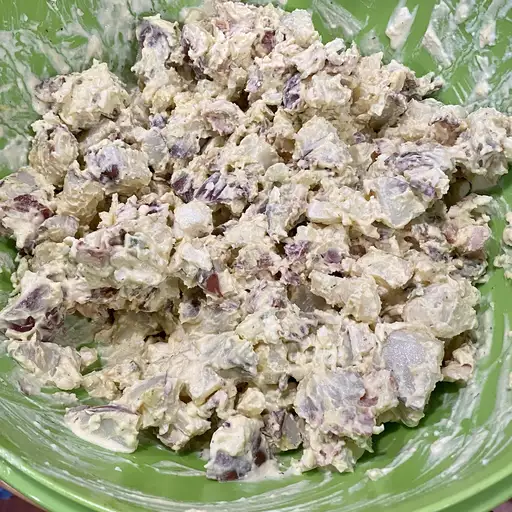

Potato Salad

Description
This red-skinned potato salad has a delicious, firm texture. It's chock full of creamy red potatoes, crispy bacon, bits of hard-boiled egg, crunchy celery, and spicy onion.
Ingredients
- 2 pounds clean, scrubbed new red potatoes
- 6 large eggs
- 1 pound bacon
- 1 onion, finely chopped
- 1 stalk celery, finely chopped
- 2 cups mayonnaise
- salt and pepper to taste
Steps
- Bring a large pot of salted water to a boil. Add potatoes and cook until tender but still firm, about 15 minutes. Drain and allow to cool.
- Place eggs in a saucepan and cover with cold water. Bring water to a boil and immediately remove from heat. Cover and let eggs stand in hot water for 10 to 12 minutes. Remove eggs from hot water; cool in ice water. Peel, then chop into small, bite-sized pieces.
- Place bacon in a large skillet and cook over medium-high heat, turning occasionally, until evenly browned, about 10 minutes. Drain bacon slices on paper towels, then crumble.
- Chop cooled potatoes, leaving skin on. Add to a large bowl, along with eggs, bacon, onion, and celery. Stir in mayonnaise, salt, and pepper. Chill in the refrigerator for 1 hour before serving.